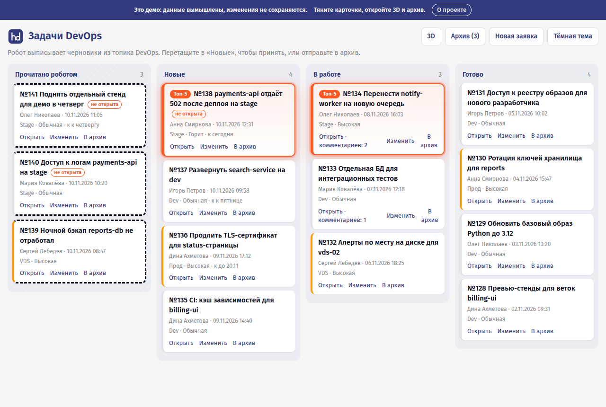
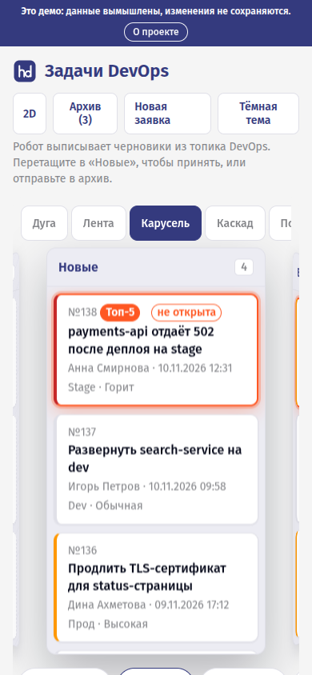
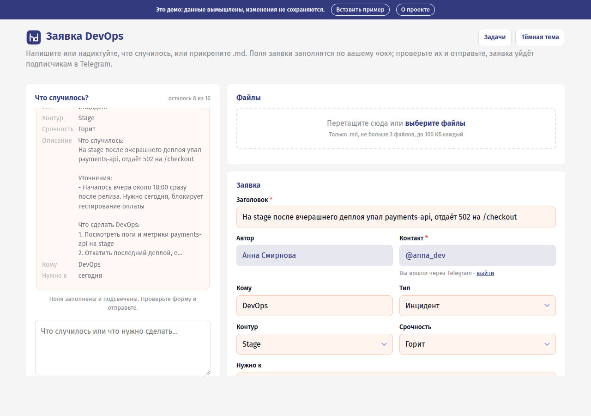
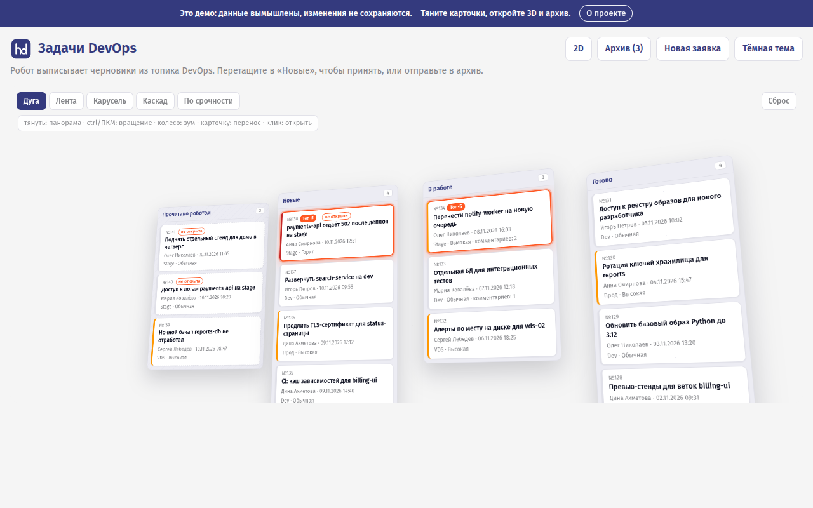
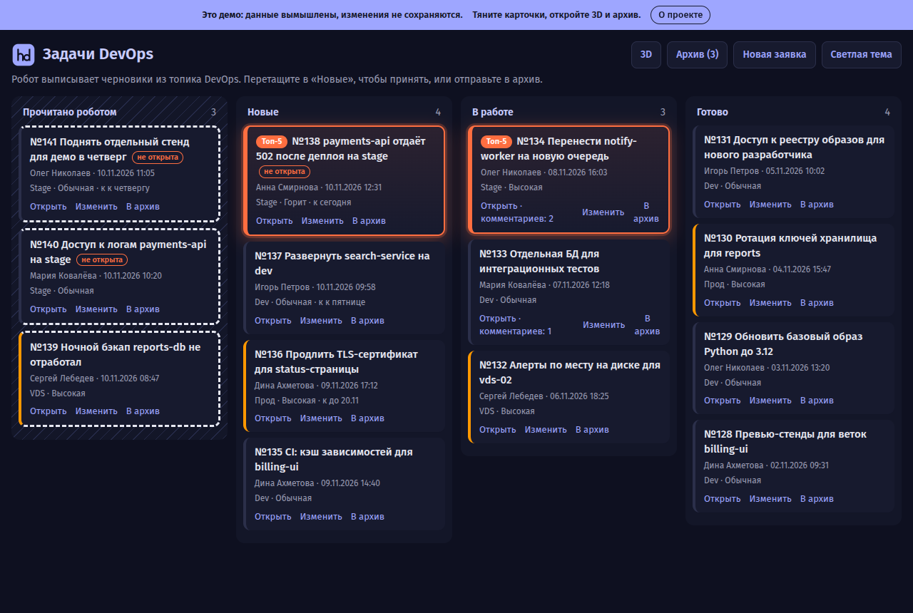
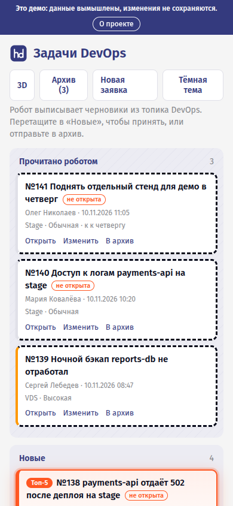
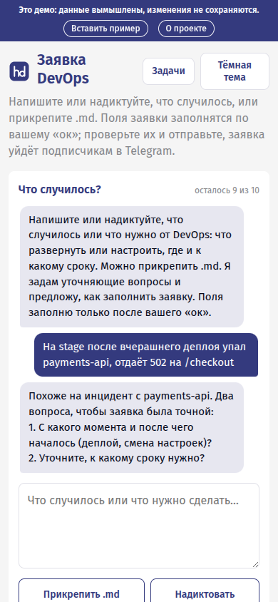

«Что случилось?» с помощником
Чат задаёт уточняющие вопросы и предлагает поля. Поля заполняются только по «ок». Можно надиктовать голосом или приложить до трёх .md — помощник их разберёт.
Человек пишет или надиктовывает, что случилось, а помощник задаёт уточняющие вопросы и предлагает поля заявки, которые заполняются только после его «ок». Заявки попадают на доску команды и подписчикам в Telegram, а робот сам выписывает черновики из рабочего чата.
A small self-hosted help desk for DevOps requests: AI-assisted form, Telegram login, kanban board with a 3D view, REST API and MCP.

Чат задаёт уточняющие вопросы и предлагает поля. Поля заполняются только по «ок». Можно надиктовать голосом или приложить до трёх .md — помощник их разберёт.
Без паролей: вход через бота, ник и имя берутся из Telegram на сервере и подменить их из формы нельзя. Новых пользователей можно пускать сразу или после подтверждения.
3 заявки и 10 сообщений чата в сутки на пользователя, общие суточные потолки, скрытое поле-ловушка, таймер заполнения и отсев дубликатов.
Колонки «Прочитано роботом → Новые → В работе → Готово». Перетаскивание мышью и пальцем, правка, комментарии, архив, метка «не открыта», подсветка «Топ-5», тёмная тема. 3D-вид на CSS-трансформациях без WebGL: пять раскладок с плавными переездами, перелёт карточек при обновлении, на телефоне — карусель колонок и меню «Переместить в:» по долгому нажатию.
Раз в 45 минут в рабочее время смотрит топик DevOps в Telegram-группе с контекстом за неделю и заводит черновики в колонку «Прочитано роботом». Главному приходит напоминание о неоткрытых заявках.
Отдельные доски под паролем админки — без рассылок и робота. В админке: заявки, пользователи (подтвердить, забанить), подписчики, выпуск API-ключей.
/api/v1 и MCP-сервер /mcp с одним Bearer-ключом: агенты и скрипты читают доску, заводят заявки, двигают и комментируют.
Стандартная библиотека Python, без БД и сборки фронтенда. Заявка — папка с request.json и файлами. Бэкап — копия каталога.
hd.py newclaude -p без встроенных инструментов




Ключ выпускается в админке, показывается один раз и хранится только хешем. Права ключа: двигать и править заявки, доступ к секретным доскам.
# новые заявки curl -H "Authorization: Bearer $HD_KEY" \ "https://hd.example.com/api/v1/tasks?status=new" # завести заявку curl -X POST -H "Authorization: Bearer $HD_KEY" \ -H "Content-Type: application/json" \ -d '{"title":"Развернуть search-service на dev", "details":"Нужен для интеграции фронта", "kind":"service","contour":"dev"}' \ https://hd.example.com/api/v1/tasks # взять в работу curl -X POST -H "Authorization: Bearer $HD_KEY" \ -d '{"status":"work","comment":"Смотрю"}' \ https://hd.example.com/api/v1/tasks/<slug>/move
Streamable HTTP (JSON), тот же ключ. Подключение к агенту:
claude mcp add --transport http hd \
https://hd.example.com/mcp \
--header "Authorization: Bearer hd_…"hd_list_taskshd_get_taskhd_create_taskhd_move_taskhd_commentGET /api/v1/tasks | список; status, board |
GET /api/v1/tasks/<slug> | карточка с историей и комментариями |
POST /api/v1/tasks | создать; draft: true — черновик без рассылки |
POST …/move · /edit · /comments | статус, поля, комментарий |
Нужен Python 3.11+. CLI claude — для помощника и робота; без него форма работает с простым разбором .md.
git clone https://github.com/neo37/hd-devops-desk.git cd hd-devops-desk export HD_STATE=./data export HD_ADDR=127.0.0.1:8093 export HD_PUBLIC=https://hd.example.com export HD_TG_BOT=my_hd_bot # имя бота без @ # пароль админки: пишется только хеш printf '%s\n' 'длинный-пароль' | python3 hd.py admin-pass devops python3 hd.py
Бот единственный опрашивает Telegram и обменивается с hd.py файлами в каталоге данных.
export HD_BOT_TOKEN=<токен от BotFather> # export HD_TG_PROXY=http://proxy.example.org:3128 python3 hdbot.py
# Caddyfile
hd.example.com {
reverse_proxy 127.0.0.1:8093
}Все переменные окружения, unit-файлы systemd и заметки о безопасности — в README.
Код можно использовать, менять и разворачивать у себя, в том числе в коммерческих проектах. Текст лицензии — в репозитории.
3D-вид доски — порт 3D-доски из Kaneo (MIT, © 2024 Andrej Acevski), перенесённый на чистый JS без сборки и зависимостей.
Помощник работает на Claude Code CLI в режиме без встроенных инструментов.